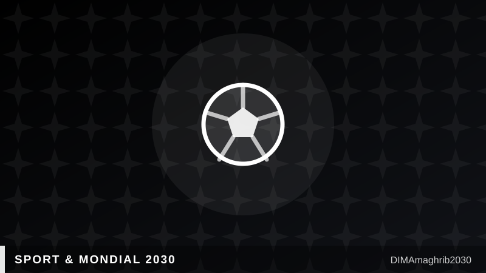

Finale du Mondial 2030 : le duel Casablanca–Madrid est lancé, et le Maroc y croit2030 World Cup Final: The Casablanca–Madrid Showdown Is On, and Morocco Believes

La plus grande bataille du Mondial 2030 ne se jouera pas sur la pelouse, mais dans les bureaux de la FIFA. Trois enceintes restent en lice pour accueillir la finale de la Coupe du Monde 2030 : le Santiago Bernabéu de Madrid, le Camp Nou de Barcelone et le futur stade Hassan II près de Casablanca. Selon la presse sportive internationale, dont Onmanorama, la décision de la FIFA est attendue autour de décembre 2026. Pour la première fois de l'histoire, un pays africain peut sérieusement revendiquer la finale du tournoi.
115 000 places, l'argument choc de Casablanca
L'atout marocain est un colosse. Érigé à El Mansouria, à environ 38 kilomètres au nord de Casablanca, le stade Hassan II offrira 115 000 places, ce qui en fera le plus grand stade de football au monde, souligne The European Times. Le chantier, estimé à plusieurs milliards de dollars, avait atteint environ 40 % d'avancement en mai selon le site spécialisé Dezeen, pour une livraison visée en 2027-2028 — deux ans avant le coup d'envoi. Ses 32 entrées monumentales et ses jardins suspendus sont pensés pour marquer les esprits autant que les votes.
Une Fondation pour piloter l'échéance 2030
En coulisses, le royaume s'organise. Le 16 juillet, la Fédération royale marocaine de football a officiellement lancé le dispositif de préparation du Mondial, avec la création d'une Fondation Maroc 2030 chargée de coordonner l'ensemble des chantiers en partenariat avec la fédération. Une gouvernance dédiée, sur le modèle des comités d'organisation des grandes éditions précédentes, pour orchestrer les 23 stades du tournoi ibéro-marocain, dont six enceintes marocaines réparties dans six villes.
Plus qu'un match, un symbole
Obtenir la finale changerait tout. Au-delà du prestige sportif, c'est un signal économique et diplomatique : des retombées touristiques massives, des droits télévisés braqués sur Casablanca et une image de pays hôte de premier rang, capable de rivaliser avec les cathédrales du football européen. Madrid part avec l'histoire, Barcelone avec la légende ; Casablanca, elle, arrive avec la démesure et l'audace. Réponse attendue à la fin de l'année — et d'ici là, chaque grue d'El Mansouria travaille aussi pour le dossier marocain.
The biggest battle of the 2030 World Cup will not be fought on grass but in FIFA's boardrooms. Three venues remain in contention to host the 2030 World Cup final: Madrid's Santiago Bernabéu, Barcelona's Camp Nou and the future Hassan II Stadium near Casablanca. According to international sports outlets including Onmanorama, FIFA's decision is expected around December 2026. For the first time in history, an African country has a serious claim on the tournament's final.
115,000 seats: Casablanca's knockout argument
Morocco's trump card is a colossus. Rising at El Mansouria, some 38 kilometers north of Casablanca, the Hassan II Stadium will hold 115,000 spectators, making it the largest football stadium on Earth, notes The European Times. The multi-billion-dollar project had reached roughly 40% completion by May, according to design magazine Dezeen, with delivery targeted for 2027-2028 — two years before kick-off. Its 32 monumental gates and hanging gardens are designed to sway minds as much as votes.
A Foundation to steer the 2030 project
Behind the scenes, the kingdom is getting organized. On July 16, the Royal Moroccan Football Federation formally launched the country's World Cup preparation framework, creating a Morocco 2030 Foundation to coordinate all workstreams in partnership with the federation. It is a dedicated governance body, modeled on the organizing committees of past editions, to orchestrate the 23 stadiums of the Iberian-Moroccan tournament — six of them in six Moroccan host cities.
More than a match, a statement
Winning the final would change everything. Beyond sporting prestige, it is an economic and diplomatic signal: massive tourism spillovers, global broadcast attention trained on Casablanca, and the image of a first-rank host nation able to stand toe to toe with European football's cathedrals. Madrid brings history, Barcelona brings legend; Casablanca arrives with scale and audacity. The answer is due at the end of the year — and until then, every crane at El Mansouria is also working on Morocco's bid.